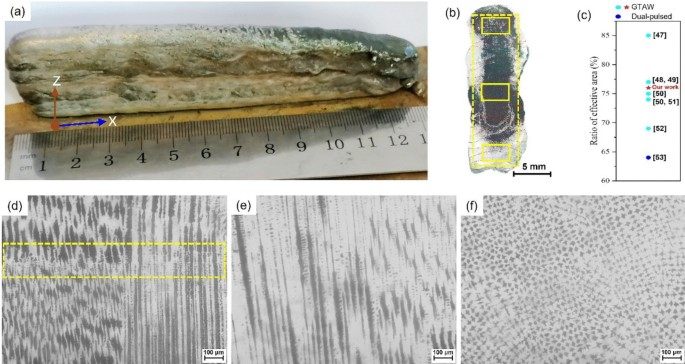
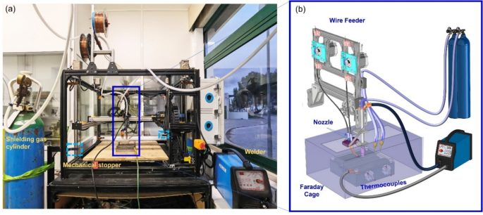

Manufacturing Problem
Wire arc additive manufacturing (WAAM) uses a welding arc and metal wire to build parts layer by layer. Each pass adds heat. The robot’s path and deposition order influence how the part heats and cools, how long it must wait between layers, and the thermal conditions that can contribute to distortion.
My research explores how thermal simulation can guide toolpath and deposition-sequence decisions before a physical build. I compare printing strategies against a consistent baseline to investigate when changes to segmentation and printing order improve the modeled process—and when they do not.
What WAAM Looks Like
These published examples show the process in context. They are from another research group and do not depict my parts, equipment, or results.


Photos: N. J. R. S. Arthur, L. Liu & J. P. Oliveira (2025), Design and development of open-source, multi-purpose wire arc additive manufacturing machine, CC BY 4.0. Photo panels shown with surrounding figure panels cropped from view.
My Technical Contributions
- Thermal modeling: Develop staged MATLAB models and separate Python studies, progressing from simplified thermal networks to heat-flow models of growing three-dimensional builds. These studies examine moving heat sources, heat flow through the deposit and build plate, and cooling between layers.
- Geometry and toolpaths: Work with STEP/CAD geometry conversion, deposition-path generation, and ways to divide a part into regions that can be scheduled during printing.
- Sequence planning: Compare fixed deposition orders, greedy next-move selection, and enumerated order studies in specific small cases.
- Numerical verification: Use analytical thermal checks, energy bookkeeping, geometry/path audits, and selected cross-implementation comparisons. These checks assess model consistency; they do not establish physical validation.
- Communication and experimental preparation: Create thermal animations, toolpath comparisons, and technical presentations, alongside path-input reviews, continuity and seam-review materials, and draft measurement records for future physical trials.
Research Approach
- 01 · Path PlanningPlan Paths
Convert CAD geometry, divide the part into regions, and review deposition paths and continuity.
- 02 · Thermal ModelModel Heat Flow
Study heat flow, cooling, and printing order in MATLAB and Python against a consistent baseline.
- 03 · Test PlanningPrepare Tests
Plan temperature, timing, and distortion measurements for future trials. Physical validation is pending.
I use a consistent baseline to study proposed segmentation and deposition-sequence strategies. The work considers modeled build time alongside temperature variation, while accounting for heat flow through the growing part and build plate and cooling between layers.
The next stage connects these models to the physical process. Path interpretation, motion assumptions, source efficiency, and fixture behavior require further review and physical measurements.
Current Status & Next Steps
Thermal models, CAD/path workflows, simulation-comparison workflows, and measurement-planning materials are implemented. The current focus is connecting the simulations to the physical process: clarifying robot paths and transitions, preserving deposition continuity, reviewing seam choices and transition timing, and preparing temperature, timing, and distortion measurements.
Physical measurements and a completed physical demonstration remain pending.
The goal is a practical, transparent planning approach that helps manufacturers evaluate printing strategies before committing to a build.
Tools & Methods
MATLAB · Python · CAD Geometry · Thermal Simulation · Toolpath Planning · Numerical Modeling
Smart and Sustainable Automation Research Lab
What I Learned
I’m learning to distinguish a consistent model from a physically validated process. Fair toolpath comparisons require a common baseline and explicit assumptions about heat flow, cooling, motion, and deposition continuity. Reviewing the robot paths and planning measurements are part of that work; physical validation remains pending.